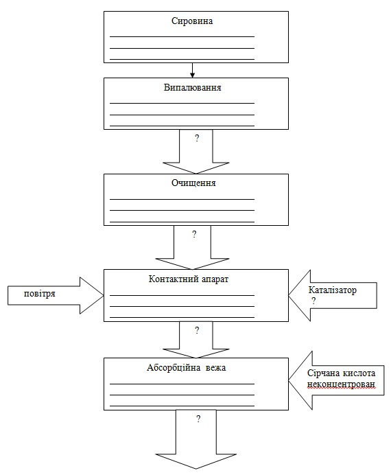

Заняття 7.
Тема: ХІМІЧНИЙ
КОМПЛЕКС ГАЛУЗЕЙ. НЕОРГАНІЧНА ХІМІЯ
Питання до розгляду:
1.
Значення та склад хімічної
промисловості
2.
Виробництво сірчаної кислоти.
3.
Виробництво мінеральних добрив.
4.
Виробництво соди
ЧИ ЗНАЄТЕ
ВИ ЩО:
* Валовий об'єм виробництва хімічної промисловості
в світі складає близько 2 трлн. дол. (це приблизно
47 річних Українських бюджетів на 2012 рік)
* Хімічна промисловість виділилася в окрему галузь
з початком промислового перевороту. Перші заводи
по виробництву сірчаної кислоти були побудовані в
1740 (Великобританія, Річмонд). Для забезпечення
потреб текстильній і скляній промисловості виникло
виробництво кальцинованої соди. Перші содові
заводи з'явилися в 1793 (Франція, Париж). З
розвитком у середині XIX в. сільського
господарства з'явилися заводи штучних добрив: у
1842 у Великобританії.
* У США хімічна промисловість почала розвиватися
пізніше, ніж в Європі, але вже до 1913 за об'ємом
виробництва хімічної продукції США зайняли і з тих
пір утримують 1-е місце в світі серед держав.
Цьому сприяють багаті запаси корисних копалини,
розвинена транспортна мережа, могутній внутрішній
ринок. Лише до кінця 80-х років хімічна індустрія
всіх країн ЄС в загальному об’ємі перевищила
об'єми виробництва країни-лідера: США.
* Окрім основних галузей: органічної і
неорганічної (або основної) хімії так само
виділяють: підгалузі кераміки, нафтохімії,
агрохімії, полімерів, еластомерів, вибухових
речовин, фармацевтичну хімію, парфумерію і
косметику.
* Сірчану кислоту застосовують:
у виробництві мінеральних добрив; як електроліт в
свинцевих акумуляторах; для отримання різних
мінеральних кислот і солей; у виробництві
хімічних волокон, фарбників, вибухових
речовин; у нафтовій, металообробній,
текстильній, шкіряній і ін. галузях
промисловості; у харчовій промисловості як
харчова добавка E513(емульгатор); у
реакціях: дегідратації (отримання діетилового
ефіру, складних ефірів); гідратації (етанол з
етилену); сульфування (синтетичні миючі засоби і
проміжні продукти у виробництві фарбників);
алкилірування (отримання ізооктану,
поліетіленгліколя, капролактаму); для відновлення
смол у фільтрах на виробництві дісцилірованої
води.
* Світове виробництво сірчаної кислоти близько 160
млн. т на рік. Найкрупніший споживач сірчаної
кислоти - виробництво мінеральних добрив. Тому
сірчанокислотні заводи прагнуть будувати в
комплексі із заводами з виробництва мінеральних
добрив.
* Під назвою «сода» ховається декілька різних
речовин: кальцинована сода - карбонат натрію
Na2CO3; кристалічна сода - загальна назва
кристалогідратів кальцинованої соди: натріт -
Na2CO3*10H2O і термонатріт - Na2CO3*H2O; питна
сода, харчова сода, двовуглекисла сода -
гідрокарбонат натрію NaHCO3; каустична сода -
гідроксид натрію NaOH.
* Звичну нам харчову соду прийнято лаяти за те, що
вона є однією з «Е»-шек у складі продуктів
харчування. Проте при правильному вживанні сода
відома як лікувальна речовина, яка входить до
складу щонайширшого асортименту лікувальних
засобів і ліків, так сода використовується: як
один із засобів для пом'якшення кашлю, сода знімає
біль в горлі при полосканні, використовується при
нежиті, в лікуванні кон'юнктивітів, як засіб від
аритмії, при гіпертонії, допомагає від
заколисування в транспорті, в парфумерії сода не
перешкоджає виділенню поту при цьому вона
нейтралізує його кисле середовище і неприємний
запах, содовий розчин допомагає заспокоїти
свербіння і паління від укусів комах, сода
використовується при запаленні ясен, содові ванни
використовуються в косметичних цілях для
розм'якшення грубої і ороговілої шкіри, для
лікування деяких грибкових захворювань. Проте
варто бути обережним і не забувати, що сода є лише
компонентом лікувальних засобів, самостійне її
неправильне вживання може привести до проблем із
здоров'ям!
Питання
для співбесіди:
1. Значення хімічної
промисловості в господарському комплексі.
2. Класифікація хімічної
промисловості.
3. Головні особливості хімічної
промисловості.
4. Сировинна база хімічної
промисловості.
5. Фактори, яки впливають на
розміщення галузей хімічної промисловості.
6. Виробництво сірчаної кислоти.
7. Особливості комбінування в
хімічній промисловості.

Завдання
№1
Систематизувати дані про основні галузі хімічної
промисловості. Визначити їх сировинну базу,
особливості технології виробництва, потреби
допоміжних ресурсів, особливості розміщення.
Заповнити таблицю.
Галузі
хімічної промисловості
|
Сировинна
база |
Приклади
продукції |
Технологія
виробництва |
Особливості
розміщення |
Гірничо-хімічна
промисловість
|
|
|
|
|
Основна хімія
|
Виробництво
неорганічних кислот
|
|
|
|
|
Виробництво
соди
|
|
|
|
|
Виробництво
фосфорних добрив
|
|
|
|
|
| Виробництво
азотних добрив |
|
|
|
|
| Виробництво
калійних добрив |
|
|
|
|
Виробництво
органічного синтезу
|
Промисловість
пластмас
|
|
|
|
|
Промисловість
синтетичного каучуку
|
|
|
|
|
Промисловість
хімічних волокон
|
|
|
|
|
|
|
|
|
|
|
Таблиця 1.
Структура галузей хімічної промисловості.
Завдання
№2
Познайомитись з особливостями виробництва сірчаної
кислоти контактним способом. Виявити основні
етапи.
Заповнити форму 40.

Форма 40. Виробництво сірчаної
кислоти.
ЕКЗАМЕНАЦІЙНІ
ПИТАННЯ
СПИСОК
ДЖЕРЕЛ
1. Куракина А.Ф. Основы промышленного и
сельскохоз. произв-ва .
М., 1981.
2. Плоткин М. Л. Основы промышленного
производства. М., 1977.
3. Хрущев А. Т. География промышленности
СССР. М., 1990.
4. Экономика отраслей народного хозяйства /
Под ред. А. С. Кима. Мн., 1987.
5. Анализ хоз. деятельности в промышлен. (под
редакцие В.И. Стражева). Мн., 1997.
6. Назаренко Н. Г. Экономика сельского хозяйства.
М., 1996.
7. Манулик А. В. Здравоохранение: вопросы теории и
организации управления Учеб.-метод, пособие. Мн.,
1994.
8. Щетинин В. П., Хроменков Н. А. Экономика
образования. М., 1998.
9. Ярошевич В. П., Шкурин М. И. Общий курс
транспорта: Учеб. пособие. Гомель, 1997 |